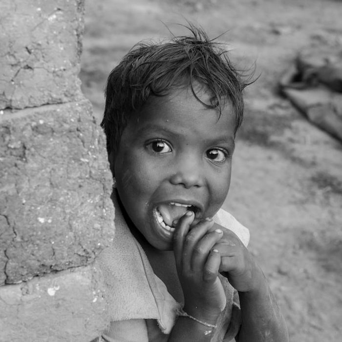

501(c)(3) · volunteer-run since 2005
Small acts of kindness change a child's life.
Baal Dan Charities funds grassroots partners feeding, educating, and protecting vulnerable children across 14 countries — and nearly 100% of every dollar you give goes straight to them.
Feeding over 1,000 children every day
Through partner-run programs in India, Nepal, Pakistan, Zambia, South Africa, Haiti, Ethiopia and Ukraine, your gift buys rice, lentils, eggs, milk and vitamins — delivered by the local organizations who know their communities best.
Explore our programs →Our mission
Meeting basic needs so every child can thrive.
Baal Dan Charities was formed to support the basic needs and social welfare of impoverished and vulnerable children — orphans, street children, children with special needs, refugees, and survivors of abuse and violence.
Our model is built on Maslow's Hierarchy of Needs: shelter, safety, food, water, medical care and education come first. Only once those basics are met can a child begin to escape the cycle of poverty and thrive.
— Mother Teresa, the guiding philosophy behind Baal Dan

Why it matters
The crisis children face today
- ⚠A child dies every 10 seconds from malnutrition — roughly 3 million children a year (UNICEF).
- ⚠75 million children have had their education disrupted by conflict and disaster.
- ⚠Poverty compounds malnutrition, stunts skill development, and lowers lifetime earnings.
What we fund
Food. Education. Water & sanitation.
Every grant — from $5,000 to $50,000 — is directed to vetted, local grassroots partners already doing the work on the ground.
Daily Nutrition
Rice, lentils, cooking oil, eggs, milk and vitamins reach over 1,000 children every single day through funded feeding programs.
Education
School supplies, textbooks and sponsorships — building on our legacy of funding girls through elementary and high school in Calcutta from 2006–2016.
Water, Sanitation & Hygiene
Schools, classrooms, toilets and wells built across India, Pakistan, Nepal, Zambia, South Africa and Haiti.
Where we work
Grassroots partners in 14 countries
India
Calcutta, Hyderabad, Delhi, Pune & more
Nepal
Kathmandu & earthquake-affected villages
South Africa
Johannesburg — Lighthouse Center
Ethiopia
Borena Zone & Tigray Region
Transparency & trust
Nearly every dollar reaches a child.
Baal Dan is run entirely by volunteer professionals — no one draws a salary. That means nearly 100% of your donation funds grants, not overhead.
Operating cost, 2024
Just 1.1% went to operations — consistently under 2.5% every year since 2006.
In their words